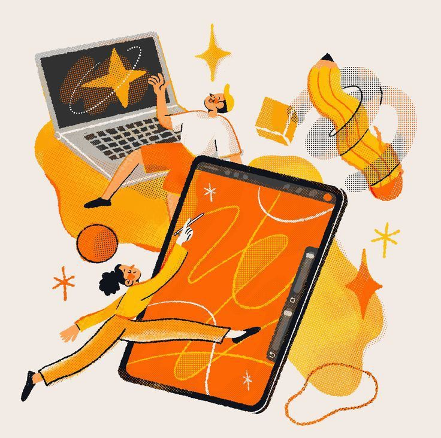
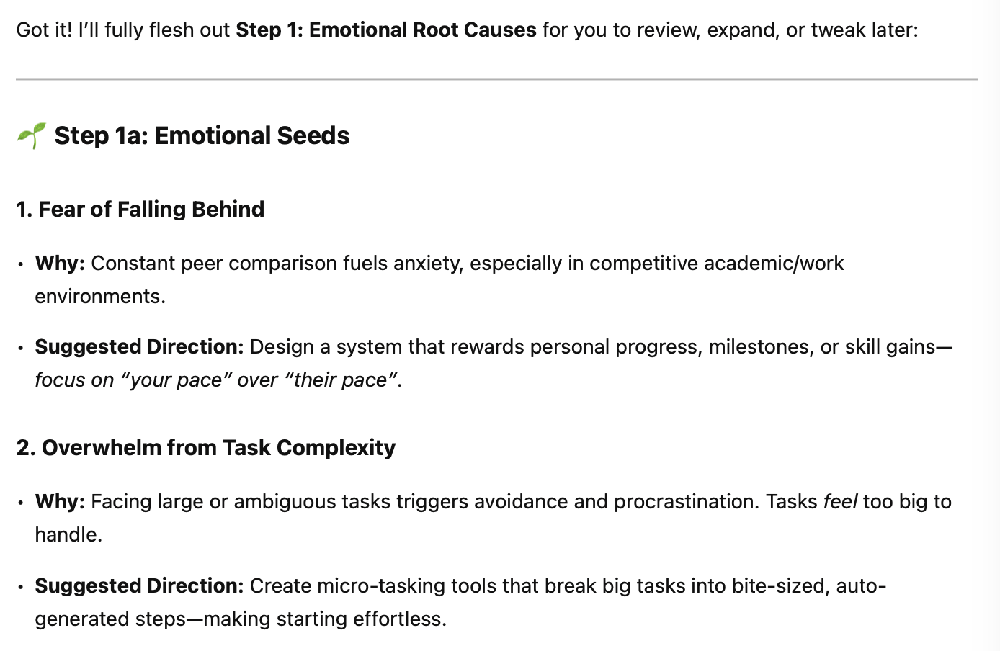
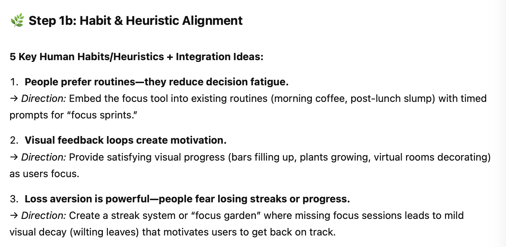
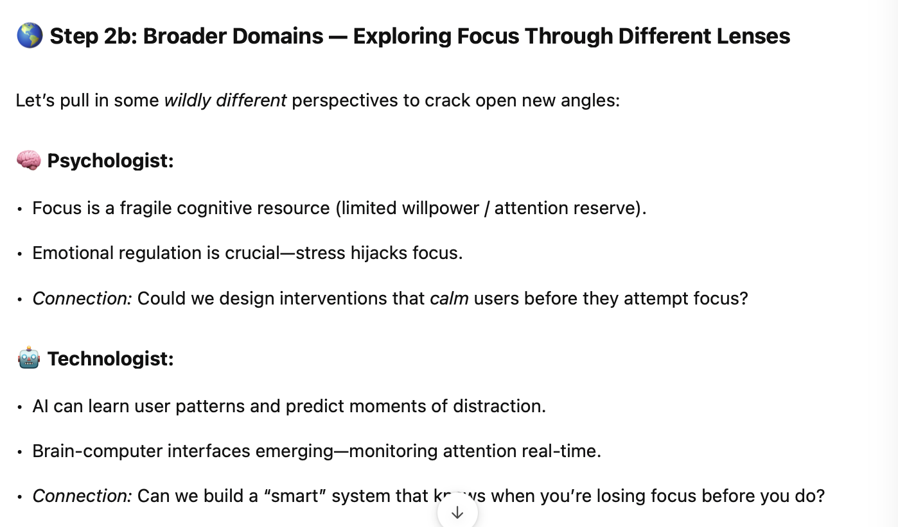

Construct the ideation prompting
Continuing from the last post, I’m going to complete and polish the prompt for the co-brainstorming session. In the previous post, I outlined the overall workflow of the ideation process and constructed a LangChain workflow diagram listing all the steps and different types of chain that are used. In this post, I’ll be working on refining the prompt.

Workflow (Part 2)
The main goal here is to instruct the LLM to co-create product ideas by helping complete a mind map. As I explained earlier, a mind map is built around a network of interrelated concepts that connect and branch out from one another. After analyzing several innovation templates, I distilled the process into three key methods: 1. Identifying emotional root causes 2. Discovering deeper, non-obvious connections 3. Generating imaginary customer feedback.
Completing the mind map requires input from both the LLM and the human user. This challenge breaks down into two main tasks: One, instructing the LLM to generate concepts and keywords; two, enabling the LLM to respond to human input and expand on those branches. The first task is more complex but can be handled effectively with well-crafted instructions. The second task might seem simple—essentially just continuing a conversation—but it raises important considerations like how the LLM interprets user input and how to generate thoughtful, contextually relevant responses. These subtle challenges require more attention than they appear at first glance.
For now, I’ve decided to focus on the first task—-building a solid foundation by guiding the LLM to generate meaningful concepts and keywords.
Building on my findings from previous posts—where I refined the prompt to help LLMs form more nuanced connections, think emotionally, and generate imaginary user personas—I’ve summarized each method into a clear set of steps.
There’s no way to know which prompt works best without testing it in a simulated ideation environment. So, I used the prompt: “Design a tool to help college students and young professionals with short attention spans focus more easily” as the base challenge. I worked with the LLM through the entire process—from problem statement generation to mind map creation.
For each trial, I tweaked the wording in the prompt to fine-tune the model’s responses and improve the output.
After several runs, I was satisfied with the refined prompt. A fraction of the final prompt looks like this:
There are many different ways to structure the branches, we can use the following ones:
- Emotional Root Causes
Follow these steps when doing this:
- Emotional Seeds
“Identify 5 core emotional root causes that lead to the problem. What feelings (e.g., anxiety, longing, excitement) do people experience? Why do these emotions arise? Present them as bullet points with brief explanations (e.g., ‘fear of letting others down,’ ‘need for recognition’). Under each root cause, suggest a corresponding suggested direction the product may take.”
- Habit & Heuristic Alignment
….
Give it a try
Using the same design challenge I mentioned above (“Design a tool to help college students and young professionals with short attention spans focus more easily”), I tested the prompt. Since the full response would be too long, GPT executed each step separately.
Here’s a glimpse of the output.



Overall, I was very satisfied with the results. The process provided me with a range of fresh perspectives and potential directions for my new product. However, a few weaknesses still need to be addressed moving forward:
Standardized Output Format: Since this tool is intended to be developed as a web app, the output needs to follow a consistent format for easier integration and presentation. Currently, the outputs from different steps vary significantly in structure, creating unnecessary challenges when it comes to cleaning and organizing the content.
Fragmented Ideas and Lack of Cohesion: While the suggested directions and concepts are interesting and creative, they often feel fragmented. As a product designer, I found the tool most helpful when I already had a base idea and was looking for add-ons or enhancements. However, because these ideas are generated using different methodologies with little connection between them, it’s difficult to establish a common thread or cohesive foundation that sets the tone for the entire product.
Based on these insights, I came up with a few changes to improve the process:
Under each step, I plan to add a small section called “sample format” to keep the output consistent. However, which format works best for users is still unclear. Since this ties closely to UX/UI design, I’ve decided to run a few user tests before finalizing it.
There are a couple of ways to address the fragmentation issue. One option is to use AI summarization to distill all potential directions into a few common threads, providing a quick reference for users to decide which path to explore. Another, less intrusive approach is to color-code similar product ideas or concepts, making it easier for users to spot patterns. Ultimately, this comes down to understanding how a product idea is formed and what kind of information the ideator needs during the process.
One final consideration is the length of the instructions. Although I don’t have a clear solution yet, I worry that overly long instructions might reduce the LLM’s efficiency and effectiveness. I still need to figure out whether it’s better to input everything at once or break the instructions into smaller chunks and feed them step by step. This will require further testing.
I’m holding off on finalizing the Reminder section for now, as there are still some ambiguities around user needs. In the next post, I’ll share insights from conversations with students and creative professionals about their experiences with ideation.